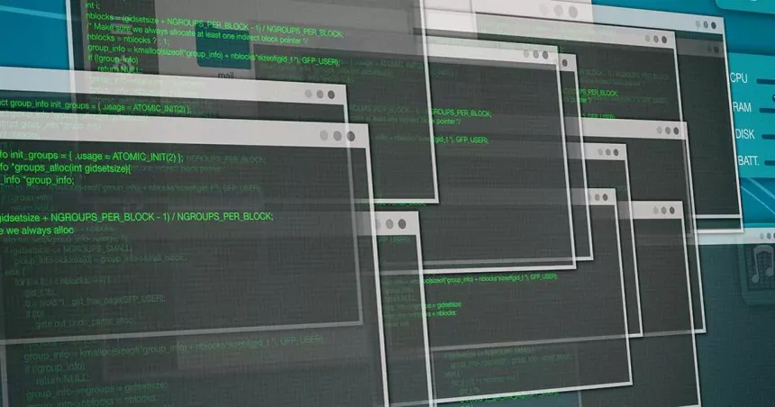
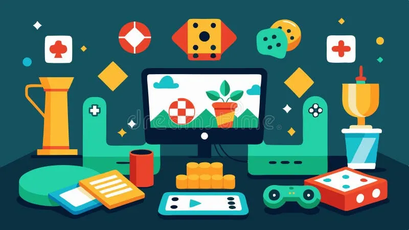
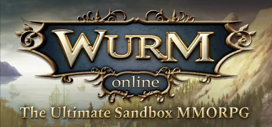
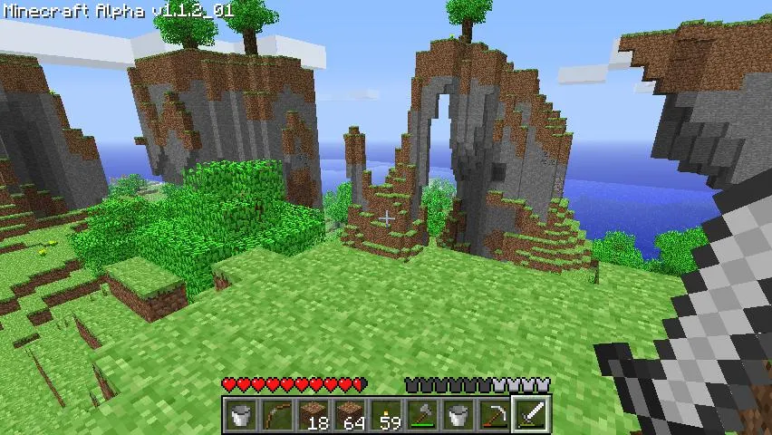
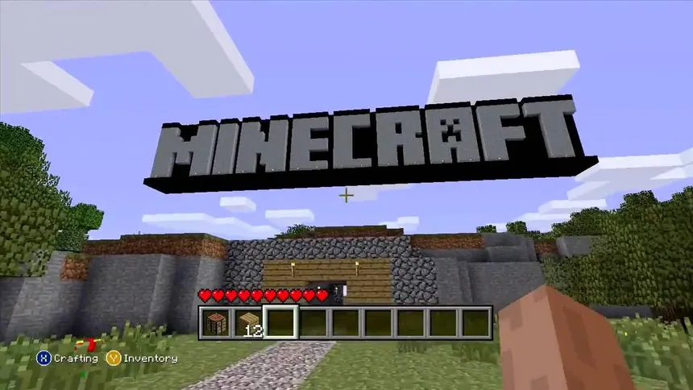
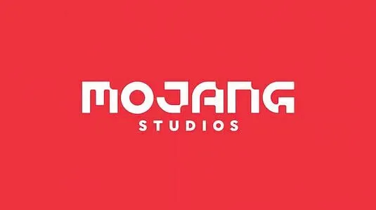

Markus « Notch » Persson
Markus Persson, plus connu sous le pseudonyme Notch, est un développeur de jeux vidéo suédois né le 1er juin 1979 à Stockholm. Il est principalement connu pour être le créateur du jeu Minecraft, l’un des jeux vidéo les plus influents et les plus vendus de tous les temps.
Son enfance et ses débuts en programmation
Dès son plus jeune âge, Notch s’intéresse aux ordinateurs et aux jeux vidéo. À seulement 7 ans, il apprend à programmer sur un ordinateur Commodore 128. Il crée alors ses premiers petits jeux en langage BASIC, simplement par curiosité et passion.

Contrairement à beaucoup de développeurs, Notch n’a pas suivi de longues études en informatique. Il a appris à coder principalement seul, en expérimentant et en s’inspirant des jeux qu’il aimait.
Ses premiers jeux et projets (souvent inconnus)
Avant Minecraft, Notch a créé de nombreux jeux qui n’ont jamais connu le succès. Ces projets lui ont cependant permis d’améliorer ses compétences et de comprendre ce qui rend un jeu amusant.


Il a notamment travaillé sur Wurm Online, un jeu sandbox multijoueur. Bien que le jeu n’ait jamais atteint une grande popularité, il a fortement influencé les mécaniques de Minecraft, comme la construction libre et la survie.
La naissance de Minecraft
En 2009, Notch décide de créer un jeu indépendant pendant son temps libre. Il s’inspire de plusieurs jeux, comme Infiniminer, et imagine un monde composé uniquement de blocs destructibles.

Son idée principale était simple : donner au joueur une liberté totale. Pas d’objectif imposé, pas de fin précise, juste un monde à explorer et à construire.
Les premières versions de Minecraft étaient très simples graphiquement, mais le gameplay innovant a rapidement attiré une communauté de joueurs passionnés.
Le succès mondial
Grâce au bouche-à-oreille et à Internet, Minecraft devient un phénomène mondial. Des millions de joueurs achètent le jeu alors qu’il est encore en version alpha.

YouTube joue un rôle énorme dans le succès du jeu : de nombreux créateurs de contenu partagent leurs aventures, rendant Minecraft encore plus populaire.
Mojang et la vente à Microsoft

Notch fonde le studio Mojang pour gérer le développement de Minecraft. Cependant, la pression médiatique et la responsabilité deviennent de plus en plus lourdes pour lui.
En 2014, il prend une décision majeure : vendre Mojang et Minecraft à Microsoft pour 2,5 milliards de dollars.
Après cette vente, Notch quitte totalement le développement de Minecraft. Le jeu continue alors son évolution sous la direction de Microsoft.
La vie après Minecraft
Après avoir quitté Mojang, Notch tente de créer de nouveaux jeux, mais aucun ne connaît le succès de Minecraft.
Aujourd’hui, Notch reste une figure importante de l’histoire du jeu vidéo, principalement pour avoir prouvé qu’un développeur indépendant pouvait créer un jeu capable de changer toute une industrie.